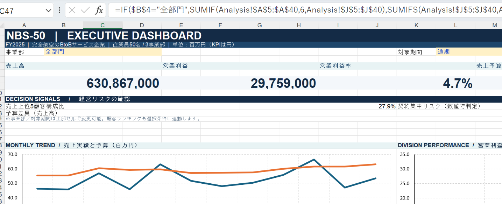
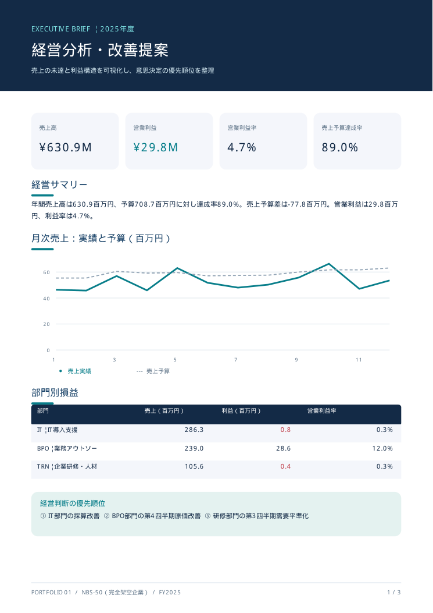

最大売上部門の低採算
売上2億8,632.5万円／営業利益78.6万円
利益率約0.27%。契約単価と工数が固定費を十分に回収できていない可能性があります。
提案：案件別の限界利益・稼働時間を計測し、価格改定と標準化を試行。
架空の50名規模BtoB企業「NBS-50」を題材に、データ設計からExcelダッシュボード、課題分析、経営改善提案まで一貫して制作しました。
原本のExcelは、部門・対象期間の切替、月次売上の実績対予算、部門利益、顧客ランキング、数値整合性確認に対応しています。画像はWindowsのExcel上で表示を確認した実際の画面です。

観測値は架空の生成データから計算したものです。原因は仮説であり、実際の事業について実証した結果ではありません。
利益率約0.27%。契約単価と工数が固定費を十分に回収できていない可能性があります。
提案：案件別の限界利益・稼働時間を計測し、価格改定と標準化を試行。
外注費率上昇や例外作業の影響が疑われますが、根本原因は未検証です。
提案：外注単価の確認、契約外作業の追加請求、運用の標準化。
季節的な受注減に固定費が重なっている可能性があります。
提案：閑散期向け講座、契約前倒し、講師稼働の見直し。
| 要素 | 設計・実装の内容 |
|---|---|
| 事業の設定 | IT 20名／BPO 15名／TRN 10名／本社 5名 |
| 架空データ | 2025年、法人45社、取引608件 |
| 原価ルール | 外注等の変動費と人件費等の固定費を分離 |
| 本社費用配賦 | 事業部員数比20:15:10、端数はTRNで調整 |
| Excel | 9シート、選択式分析、グラフ、検算シート |
| 検証 | 独立Python集計、Windows版Excelの表示・部門切替 |
Excelの取引追加は集計範囲（基本2〜2000行）と計算式のコピーが必要です。無制限自動更新ではありません。

契約別採算、工数、外注単価、失注理由を把握。
価格改定、外注管理、閑散期向けサービスを小規模に検証。
利益率・原価率・稼働などを確認し継続判断。
試算改善余地は合計約1,500万円。実績や効果保証ではありません。
ChatGPTを使い、架空データ、Python処理、Excel構築、報告書のドラフトを制作しました。
分析に必要な条件を設定し、Windows上で画面表示・部門切替を確認。丸め誤差や表現上の問題を修正しました。
配布ソースは専用環境の artifact_tool を使用。Windowsでソースから再生成する試験は未完了です。
アップロードされた原本をそのまま配置しています。画像は実際のExcel画面、PDFとExcelは制作した元ファイルです。